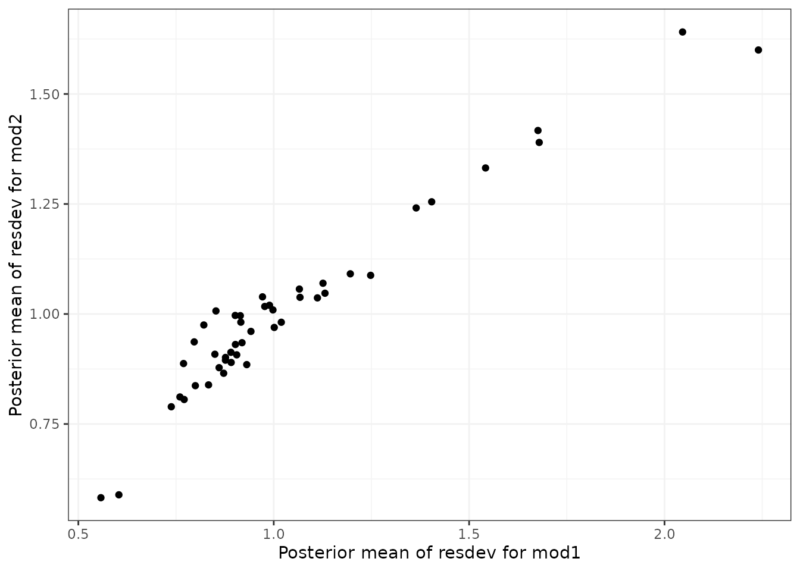

consistencychecking-3.RmdWhen performing a MBNMA by pooling relative treatment effects, the modelling approach assumes consistency between direct and indirect evidence within a network. This is an incredibly useful assumption as it allows us to improve precision on existing direct estimates, or to estimate relative effects between treatments that have not been compared in head-to-head trials, by making use of indirect evidence.
However, if this assumption does not hold, this is extremely problematic for inference, so it is important to be able to test it. A number of different approaches exist to allow for this in standard Network Meta-Analysis (NMA) (Dias et al. 2013), but within dose-response MBNMA there is added complexity because the consistency assumption can be conceptualised either for each treatment comparison (combination of dose and agent), or for each agent, where consistency is required for the agent-level parameters governing the dose-response relationship. A detailed description of consistency testing in MBNMA models is given in Pedder et al. (2021).
Testing for consistency at the agent-level is challenging as there is unlikely to be the required data available to be able to do this - included studies in the dataset must have multiple doses of multiple agents, so that sufficient information is available to estimate dose-response parameters within that study. However, testing for consistency at the treatment-level is possible in MBNMA, and this is described below. In practice, testing for consistency at the treatment-level should suffice, as any inconsistency identified at the treatment level should also translate to inconsistency at the agent level and vice versa (Pedder et al. 2021).
Consistency also depends on the functional form assumed for the dose-response relationship, and so is inextricably linked to model fit of the dose-response relationship. A thorough assessment of the validity of the fitted model is therefore important to be confident that the resulting treatment effect estimates provide a firm basis for decision making.
When meta-analysing dose-response studies, the potential for inconsistency testing may actually be reasonably rare, as most (if not all) trials will be multi-arm placebo-controlled. Since each study is internally consistent (the relative effects within the trial will always adhere to consistency relationships), there will be no closed loops of treatments that are informed by independent sources of evidence.
To check for consistency at the treatment level using UME we fit an NMA that does not assume consistency relationships, and that only models the direct relative effects between each arm in a study and the study reference treatment (Dias et al. 2013). If the consistency assumption holds true then the results from the UME model and the NMA will be very similar. However, if there is a discrepancy between direct and indirect evidence in the network, then the consistency assumption may not be valid, and the UME results are likely differ in several ways:
# Using the alogliptin dataset
alognet <- mbnma.network(alog_pcfb)
nma <- nma.run(alognet, method = "random")
ume <- nma.run(alognet, method = "random", UME = TRUE)| Model | Residual Deviance | Betwen-study SD |
|---|---|---|
| NMA | 46.37 | 0.12 (0.073, 0.18) |
| UME | 45.69 | 0.14 (0.087, 0.22) |
As both the residual deviances and between-study SDs are similar, this would suggest that there is no evidence of inconsistency in this network, though comparing results for individual comparisons from the models can also be useful.
Deviance-deviance plots (Dias et al.
2013) can be compared between different models to investigate the
fit of different data points. This can be done for two different models
at a time using devdev():
# Compares residual deviance contributions from NMA and UME models
devdev(nma, ume, dev.type = "resdev")
In Pedder et al. (2021) we suggest comparing the following models using these plots to evaluate consistency in MBNMA:
Differences in deviance contributions between models 1 and 2 will highlight data points which may fit the dose-response relationship poorly. Difference in deviance contributions between models 2 and 3 will highlight data points which are suggestive of inconsistency.
Another approach for consistency checking is node-splitting. This
splits contributions for a particular treatment comparison into direct
and indirect evidence, and the two can then be compared to test their
similarity (Valkenhoef et al. 2016).
Node-splitting in dose-response MBNMA is an extension to this method, as
indirect evidence contributions can be calculated incorporating the
dose-response function. mbnma.nodesplit() takes similar
arguments to mbnma.run(), and returns an object of
class("nodesplit").
In addition to these, the argument comparisons can be
used to indicate which treatment comparisons to perform a nodesplit on.
If left as NULL (the default) node-splits will
automatically be performed in all closed loops of treatments in which
comparisons are informed by independent sources of evidence. This is
somewhat similar to the function
gemtc::mtc.nodesplit.comparisons(), but uses a fixed
network reference treatment and therefore ensures differences between
direct and indirect evidence are parameterised as inconsistency rather
than as heterogeneity (Dias et al. 2013).
However, it also allows for indirect evidence to be informed via the
dose-response relationship even if there is no pathway of evidence
between the treatments, which can in fact lead to additional potentially
inconsistent loops. To incorporate indirect evidence in this way
incldr=TRUE can be set in
inconsistency.loops(), the default when using
mbnma.nodesplit()
The complexity of the dose-response relationship fitted and the
amount of indirect evidence available will also affect the number of
comparisons on which node-splitting is possible (Pedder et al. 2021). If there is only limited
indirect dose-response information for a given comparison (e.g. only two
doses available for the agents in the comparison), then only a simpler
dose-response function (e.g. exponential) can be fitted. The values
given in inconsistency.loops()$path can give an indication
as to the number of doses available for each comparison. For example,
drparams 3 4 would indicate that the indirect evidence is
estimated only via the dose-response relationship, and that within the
indirect evidence there are three doses available for estimating the
dose-response of the agent in t1 of the comparison, and
four doses available for estimating the dose-responses of the agent in
t2 of the comparison. This means that a three-parameter
dose-response function would be the most complex function that could be
used when node-splitting this comparison.
As several models have to be run for each closed loop of treatments, node-splitting can take some time to run, and it therefore is not shown for the purposes of this vignette.
# Using the psoriasis dataset (>75% improvement in PASI score)
psoriasis$r <- psoriasis$r75
psorinet <- mbnma.network(psoriasis)
# Identify comparisons on which node-splitting is possible
splitcomps <- inconsistency.loops(psorinet$data.ab, incldr = TRUE)
print(splitcomps)
# If we want to fit an Emax dose-response function, there is insufficient
# indirect evidence in all but the first 6 comparisons
nodesplit <- mbnma.nodesplit(psorinet, fun = demax(), comparisons = splitcomps[1:6,
], method = "common")
print(nodesplit)Performing the print() method on an object of
class("nodesplit") prints a summary of the node-split
results to the console, whilst the summary() method will
return a data frame of posterior summaries for direct and indirect
estimates for each split treatment comparison.
The nodesplit object itself is a list with results for each treatment comparison that has been split. There is a lot of information within the results, but the most useful (and easily interpretable) elements are:
p.values the Bayesian p-value for the posterior overlap
between direct and indirect estimatesquantiles the median and 95%CrI of the posterior
distributions for direct and indirect evidence, and for the difference
between them.forest.plot a forest plot that shows the median and 95%
CrI for direct and indirect estimatesdensity.plot a plot that shows the posterior
distributions for direct and indirect estimatesIt is possible to generate different plots of each nodesplit
comparison using plot():